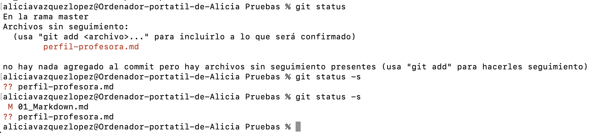
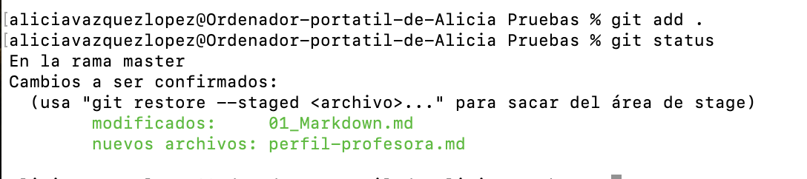
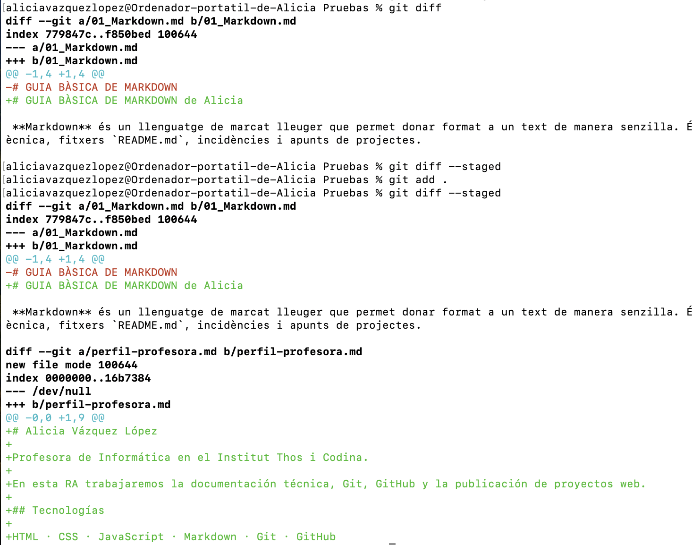
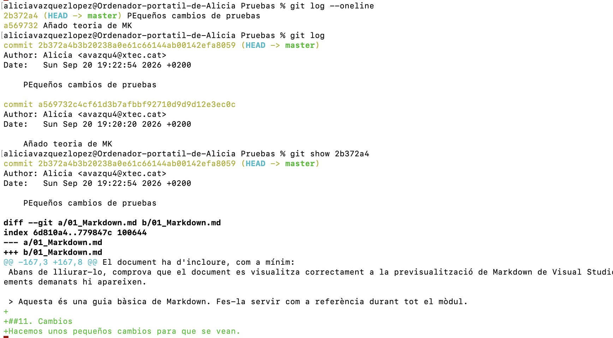
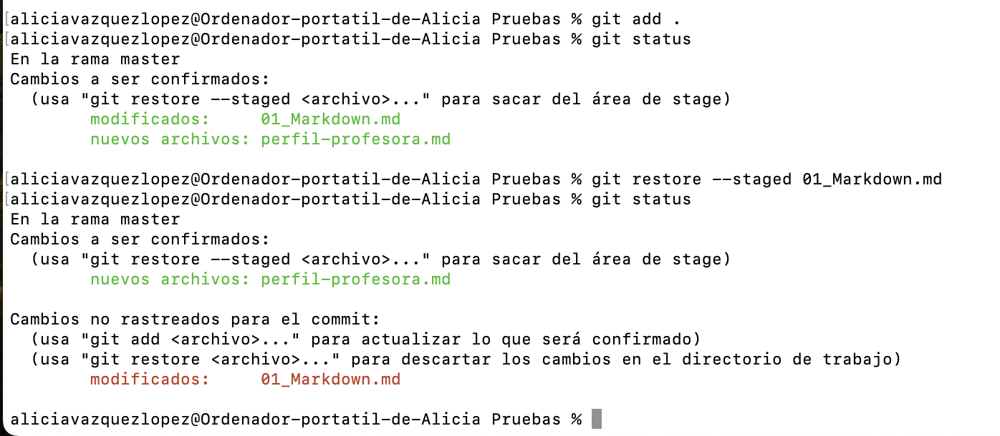
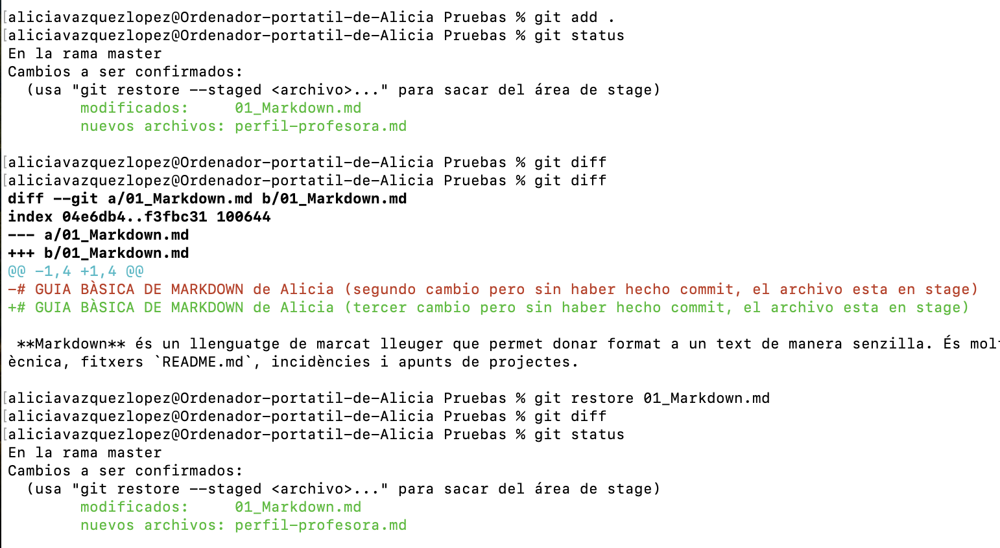
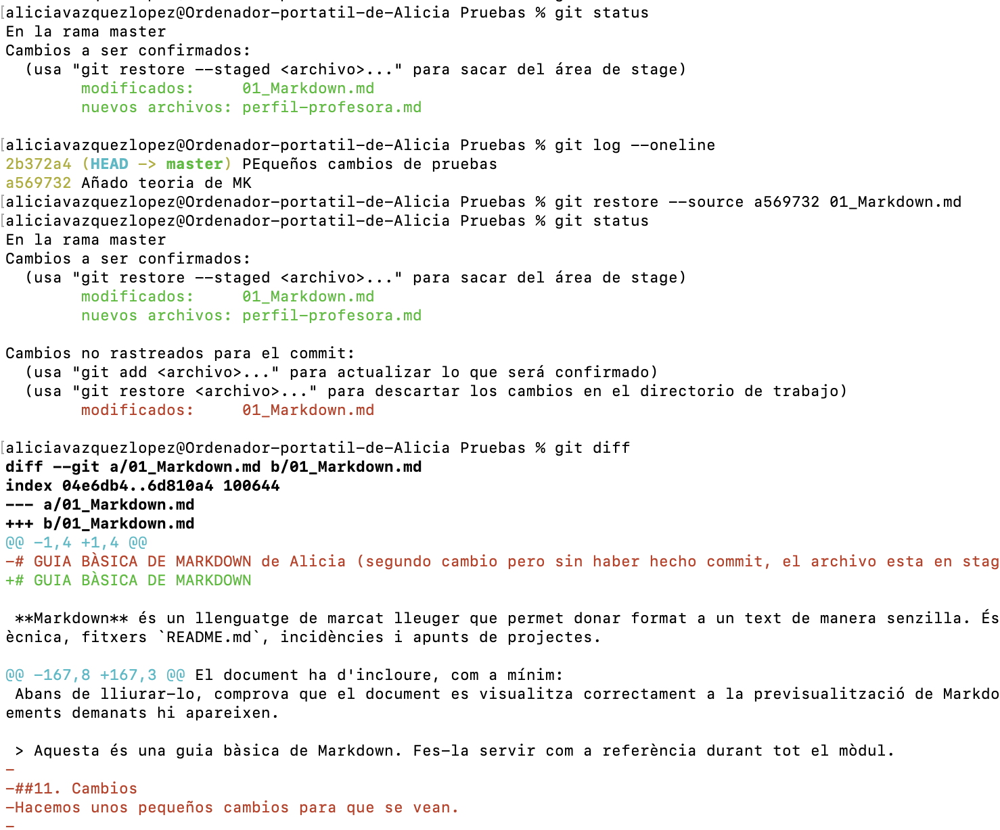
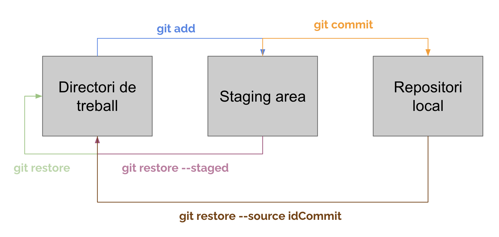
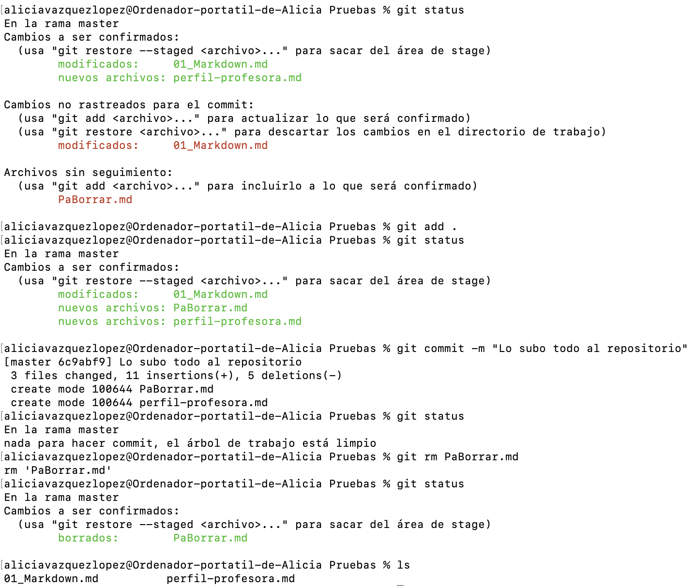

1. Observar
Usa git status y git diff para saber qué has modificado.
3 · Git local · Gestión diaria
Después de iniciar un repositorio y crear commits, Git permite revisar qué ha cambiado, preparar solo lo necesario, corregir errores y mantener fuera los archivos que no deben publicarse.
Antes de hacer un commit conviene comprobar el estado. Así evitamos incluir archivos por error y el historial explica realmente la evolución del proyecto.
Usa git status y git diff para saber qué has modificado.
Añade al área de preparación solo los cambios que forman una unidad de trabajo.
Haz un commit con un mensaje breve que describa el resultado conseguido.
git statusgit add archivogit commit -m "docs: actualiza el perfil"
git statusMuestra los archivos modificados, los nuevos, los preparados para el próximo commit y los que Git no sigue. Es el comando que debes ejecutar más a menudo.
git statusgit status -s
Una vez hacemos git add de un archivo, el staging cambia:
git status muestra qué archivos están preparados para incluirse en el próximo
commit.

git diffEnseña línea a línea lo que has cambiado y todavía no está preparado. Con --staged
revisa justo lo que entrará en el próximo commit.
git diffgit diff --staged
git logConsulta los commits ya guardados. El formato corto ayuda a leer la historia;
git show abre el detalle de un commit concreto.
git log --onelinegit show HASH
git log --oneline --graph --allDibuja la historia de forma compacta. Más adelante servirá para entender ramas y fusiones.
git log --oneline --graph --allGit separa el directorio de trabajo y el área de preparación. Por eso podemos sacar un archivo del staging sin borrar los cambios que hemos escrito.
Al hacer git add . se han añadido también cambios de 01_Markdown.md que
no nos interesan en este commit. Con git restore --staged 01_Markdown.md
recuperamos el estado del staging: el archivo deja de estar preparado, pero sus cambios
continúan en el directorio de trabajo para poder revisarlos o descartarlos después.
git restore --staged 01_Markdown.md
Recupera la última versión confirmada de un archivo. Se pierden los cambios locales de
ese archivo; revisa primero con git diff.
git restore nombre-archivo
Si quieres recuperar la versión de un archivo tal como estaba en un commit anterior, primero
localiza su identificador con git log --oneline. Después recupera ese contenido en
el directorio de trabajo:
git restore --source id_commit nombre_archivoEste comando no actualiza el staging. El área de preparación conserva lo que ya
tenía; por eso, al ejecutar git status, pueden aparecer a la vez cambios preparados
y cambios no preparados en el mismo archivo.

Idea clave
git restore --staged cambia la selección del próximo commit. git restore
cambia el contenido del archivo. No son equivalentes.

Cuando un archivo ya forma parte del repositorio, usa comandos de Git para que la operación y el área de preparación queden sincronizadas.
git rmBorra el archivo del equipo y prepara su eliminación para el próximo commit. Después confirma el cambio.
git rm borrador.txtgit commit -m "docs: elimina borrador"
git mvMueve o renombra un archivo y deja el cambio preparado. Git detecta normalmente los renombrados, pero este comando hace explícita la intención.
git mv perfil.mk perfil.mdgit commit -m "docs: renombra el perfil"
Archivos que no se publican
.gitignoreEste archivo indica a Git qué archivos nuevos debe ignorar: datos privados, archivos temporales del sistema o configuraciones locales. No sustituye a la seguridad: una contraseña que ya se ha compartido debe cambiarse.
# Sistema y editor
.DS_Store
.vscode/
# Datos privados
.env
secrets.txt
# Archivos generados
*.log
node_modules/*.log ignora una extensión. Una barra final como dist/ representa una
carpeta. Las reglas solo afectan a archivos que aún no estaban siendo seguidos.
git add .gitignoregit commit -m "chore: añade reglas de ignore"Si un archivo ya fue añadido antes, .gitignore no lo elimina del control de versiones.
Revísalo con la docente antes de usar git rm --cached nombre-archivo: deja el archivo
en tu equipo, pero prepara su salida del repositorio.
Un commit no es una copia de seguridad al azar: representa un cambio comprensible. Escribe el mensaje en imperativo o como resultado, sin puntos finales y con la información suficiente para entenderlo semanas después.
git commit -m "cambios"git commit -m "final"git commit -m "arreglo"
git commit -m "docs: añade intereses al perfil"git commit -m "docs: crea chuleta de Git"git commit -m "chore: añade .gitignore"
Ejercicio práctico
Continúa con el repositorio local donde creaste perfil.md y chuleta-git.md. El
objetivo es practicar el ciclo completo y terminar con un historial claro y un repositorio limpio.
git status y explica con
una frase qué significa cada grupo de archivos que aparece.perfil.md: añade una sección “Herramientas que estoy aprendiendo” con
Markdown. Antes de añadirla, consulta el cambio con git diff.perfil.md con git add perfil.md. Comprueba con
git diff --staged que el contenido preparado es el correcto y crea el commit
docs: añade herramientas al perfil..gitignore. Añade al menos .DS_Store,
.vscode/ y *.log y un fichero especifico tuyosecreto.txt. Confírmalo en un commit separado:
chore: añade .gitignore.pruebas.log. Ejecuta git status y
verifica que Git no lo muestra. No lo añadas ni lo confirmes..txt que quieras ignorar, por ejemplo secreto.txt.
chuleta-git.md, añade las parejas de comandos de este apartado:
status/diff, restore --staged/restore y rm/mv, con una
frase propia para cada uno. Confirma el cambio con docs: amplía chuleta de Git.
git log --oneline y de
git status. El estado final debe indicar que no hay nada pendiente de confirmar.